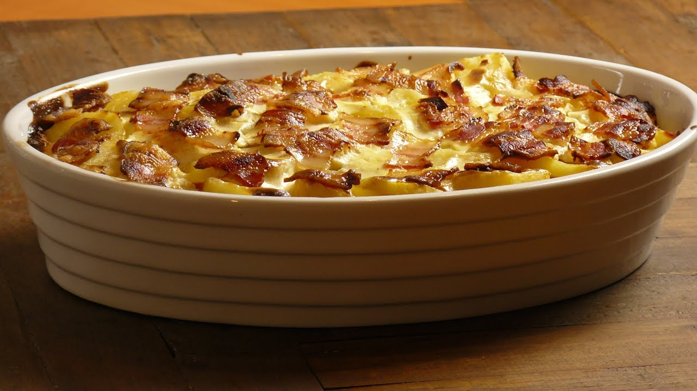

Food

Homepage
Description
This is a recipie for layer potatoes. Actually, let me rephrase - this is THE recipie for layer potatoes. Best thing
you can make which will cost less than $20 and can be eaten pretty much nonstop for the next few weeks.
It takes a few hours to make but is totally worth it. Make sure to get a load of ketchup too because it's really good with that.
Ingredients
- 2.5x potatoes per person/meal being served
- 3x eggs per person/meal being served
- About 1lb of sliced ham
- 3 tbsp black pepper
- 3 tbsp salt
- 400ishml heavy pouring cream
- 100ml full cream milk
- A working oven
- Chives
Steps
- Preheat oven to 180 degrees celsius
- Boil potatoes until soft but firm
- Hardboil eggs
- Peel and slice both potatoes and eggs
- Mix the cream, milk, salt and pepper together
- Put a layer of sliced potatoes at the bottom of your dish
- Follow with a layer of eggs then a layer of ham then pour the cream sauce on top
- Repeat process until you are at the top of the dish
- Throw the pan in the oven and bake for 30 minutes, reapplying cream whenever the top starts to dry
- Remove when the time is up or the top layer of potatoes is starting to crisp around the edges